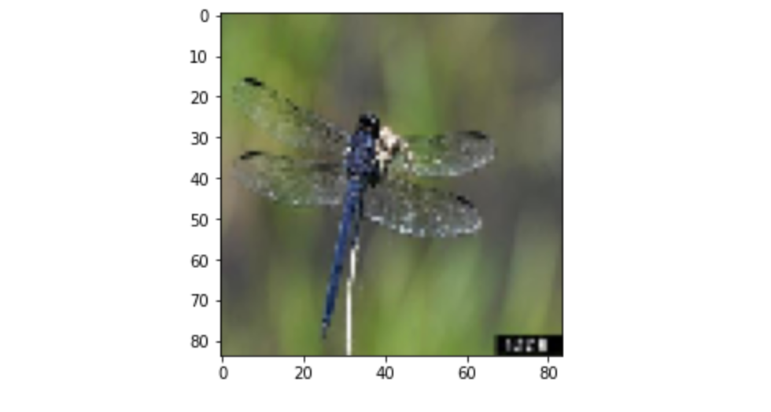
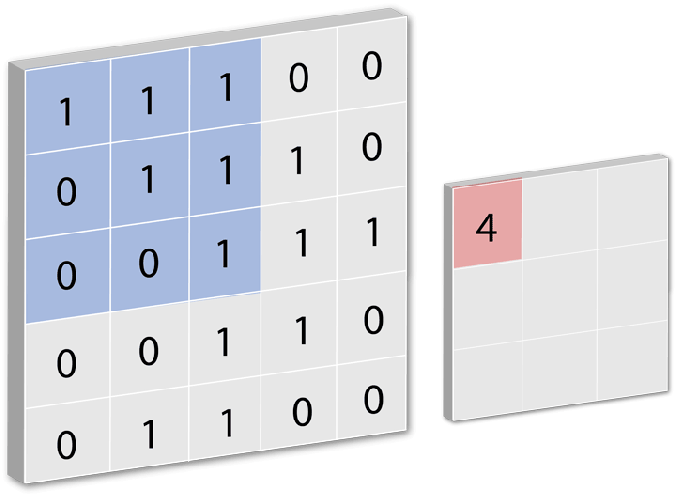
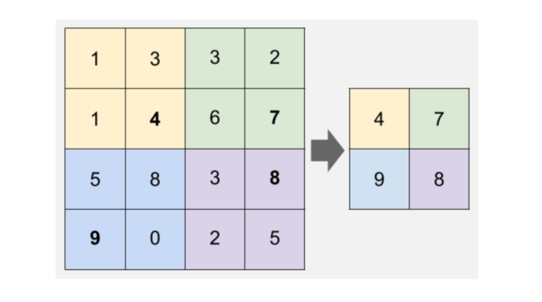
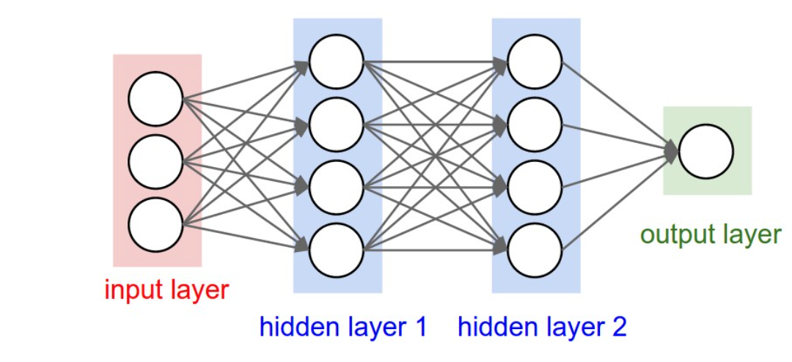
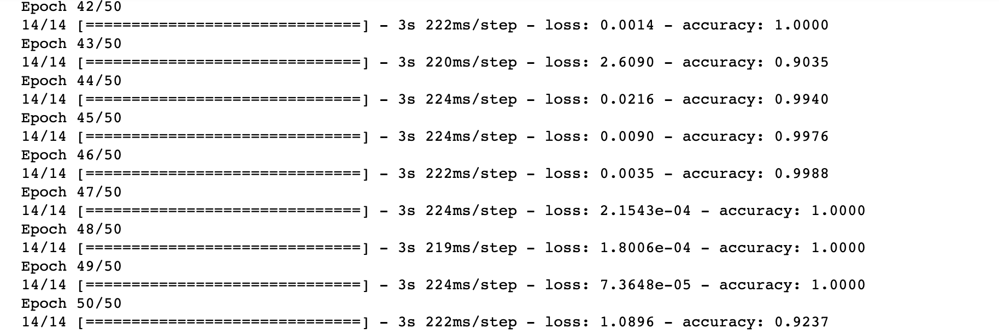

Introduction to CNN
A convolutional neural network (CNN) is a specific type of artificial neural network that uses perceptrons, a machine learning unit algorithm, for supervised learning, to analyze data. CNNs apply to image processing, natural language processing and other kinds of cognitive tasks. They are also the go-to deep learning architecture for computer vision tasks, such as object detection, image segmentation, facial recognition, etc.
Image Classification
Image classification is one of popular use-case for CNN. In this hands-on tutorial, we will leverage Keras, a python based deep learning framework to build the CNN model to classify the type of insects from insect images.
Classification is the process of categorizing images based on their features. Theses feature are usually represented by the significant edges in an image, the level of pixel density, the different pixel values, etc. With regard to the insect dataset, the shapes and edges of insects could be different, the colors in pixels values may also vary, and these indicators may help indentify the specific insect images, and we hope to find thses specific pattern across these images by converting them into matrices of pixel values and further feed these data into deep learning models.
One example of this preprocessing is shown below. After converting the images into matrices of pixels, we could construct the original image with the following code, which will return the first image in train dataset.
img = plt.imshow(X_train[0][:,:,::-1])

Figure 1 - Image of Dragonfly
Components in CNN
The workflow is as follows: For each input image in CNN models, it will pass it through a series of convolution layers with filters (Kernals), then the Pooling process, then will pass through fully connected layers (FC) and lastly, apply Softmax function to classify an object, and return the probabilistic values between 0 and 1.
Convolution
A convolution is a mathematical operation applied on a matrix. This matrix is usually the image represented in the form of pixels/numbers. The convolution operation extracts the features from the image. 
Figure 2 - Convolution Example
Padding
Padding is simply a process of adding layers of zeros to our input images so as to avoid the problems mentioned above. This prevents shrinking as, if p = number of layers of zeros added to the border of the image, then our (n x n) image becomes (n + 2p) x (n + 2p) image after padding
ReLu layer
The importance of ReLU is to introduce non-linearity in our CNN model. This is an element-wise operation (applied per pixel) which will replaces all negative pixel values by 0 in the feature map. Convolution is a linear operation – element wise matrix multiplication and addition, so we account for non-linearity by introducing a non-linear function like ReLU.
Pooling
The reason why we introduce Spatial Pooling (also called subsampling or downsampling) is that it will reduce the dimensionality of each feature map but retains the most important information. Spatial Pooling can be of different types: Max, Average, Sum etc. In case of Max Pooling, we define a spatial neighborhood (for example, a 2×2 window) and take the largest element from the rectified feature map within that window. In cases of Average Pooling, we could take the average values, and in case of sum pooling, we will use the sum of all elements in that window. In practice, Max Pooling has been shown to perform the best. 
Figure 2 - Pooling Example
Fully connected layer
Then we will flatten the output of the last ReLu layer. (Flattening means we convert it to a vector.) The vector values are then connected to all neurons in the fully connected layer. When the model is able to detect higher level features in the input images, it can then function as an input for a fully connected layer. 
Figure 2 - Fully connected layer Example
Code Implementation
Below is the Python keras inplementation of using the insects dataset to classify the type of insects. After pre-processing mentioned previously, we then construct the CNN model and fit the train dataset into the model. Here I use 50 epochs and batch size of 64, and as shown in the screenshot, the accuracy kept increasing as the training proceed.
model = keras.models.Sequential()
model.add(Conv2D(32, (5, 5), activation='relu', input_shape=(84,84,3)))
model.add(MaxPooling2D(pool_size=(2, 2)))
model.add(Conv2D(32, (5, 5), activation='relu'))
model.add(MaxPooling2D(pool_size=(2, 2)))
model.add(Flatten())
model.add(Dense(1000, activation='relu'))
model.add(Dropout(0.5))
model.add(Dense(500, activation='relu'))
model.add(Dropout(0.5))
model.add(Dense(250, activation='relu'))
model.add(Dense(10, activation='softmax'))

Then after the training is completed, the model will be compiled and fit on train dataset. The accuracy on test data is 0.73 and loss is 1.60. These are not optimal as of now, there may be overfitting issues, which could be fixed by further tuning the model and using cross-validation techniques in the future.
model.compile(
loss='categorical_crossentropy',
metrics=['accuracy'])
model.fit(X_train, y_train, epochs=50, batch_size=64)
test_loss, test_acc = model.evaluate(X_test, y_test)